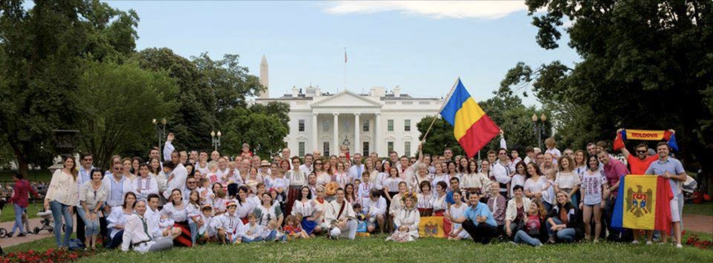
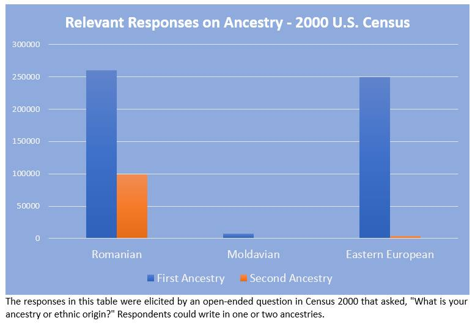
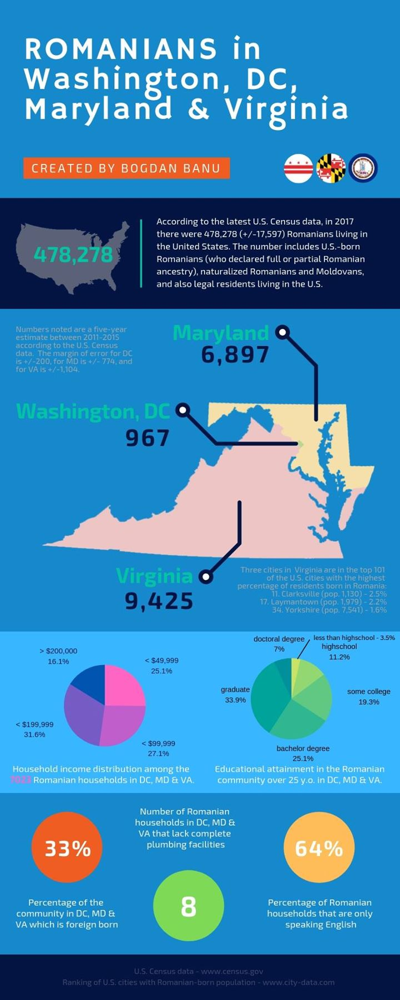

fcAAAARRKBu
Link: Facebook/Romanian Community in Washington..., Numbers and Facts

As an active member of the Romanian community in Washington DC I often get asked: how many Romanians live in the area, how large is the Romanian community in the Nation's Capital, or how is the Romanian community spread-out in and around Washington DC?
Truth is that in the past 20 plus years I have lived here, I have heard a wide range of numbers - anywhere from 2,000 to event 30,000 Romanians living in the area. These are all, at best, guesstimates; the reality is that no one truly has an understanding or the knowledge as to how many Romanians actually live here.
A few weeks ago, as I was getting ready for a presentation I was putting together for the constitutive meeting of Romanians of DC, I decided that it was perhaps the time to try and answer these questions and find out how many Romanians actually live in the Washington, DC metropolitan area (also known as DMV). So, I started looking at U.S. census data and after spending a few hours trying to navigate the not-so-friendly database I was finally able to answer these questions. The answers surprise me or, perhaps the better word would be, underwhelmed me.
In my efforts to understand and discover the size of the Romanian community in the Washington DC area, I started looking at various options available to sort data on the U.S. Census Bureau database. The selection I've made reflected first and foremost Americans who responded on their questionnaires that they have Romanian ancestry. This could be full or partial ancestry[1] based on an individual’s self-identification and is in no way connected to the place of birth of the ancestors. In other words, Romanian ancestry could reflect also those born in neighboring countries or those born on territories which at one time were not in the current borders of Romania (for example, prior to 1918, in the Austro-Hungarian Empire). The selection for Romanian ancestry also included those born in Romania and the Republic of Moldova (regardless of their ethnicity / nationality) and it also included people who may not be U.S. citizens but who are in the United States on long-term visas - primarily green cards holders and international students.
Some may argue that the census data on ancestry doesn't reflect an accurate picture of the various ethnic groups in the U.S. There's a case to be made for this argument. The question about ancestry was asked in the 1980, 1990, and 2000 decennial censuses which used a short and a long form. The long form was sent in average to one in six households and it was only this form that captured ancestry information. From the answers received from the long form, statistics were used to extrapolate data and to make an approximation on the total numbers for each ancestry group.

The last decennial U.S. Census, that of 2010, only used a shorter questionnaire which no longer asked an ancestry question.[2] Data on ancestry has however been collected through the American Community Survey (ACS). ACS is administered each year to over 3.5 million households across the U.S. (out of a total of approximately 126.22 million). Those households selected to take part in the American Community Survey (on a rotating basis) are legally obligated to answer the questions because, according to the U.S. Census, ACS “is part of the decennial census, replacing the previously used long form.”[3] According to the latest ACS data from 2017 there are 478,278 (+/-17,597) Romanians in the U.S. - the number includes those who listed Romanian as their first or second ancestry.
Those that argue that the data of the U.S. Census on ancestry is rather imprecise also point out that the census does not reflect illegal immigrants. Particular to Romanians, the data also includes two categories of people that may skew the overall numbers: people who are born in Romania or the Republic of Moldova but who may belong to ethnic minorities (this may be particularly relevant for Hungarians / Russians); and on the flip side, it excludes Romanians that come from neighboring countries (in particular from Ukraine and to a lesser degree from Serbia).
Mindful of these issues, what are the numbers? Shockingly, in Washington DC according to the U.S. Census data for 2015 (the last year for which the data was compiled) there are in fact less than 1,000 Romanians – 967 (+/-200) to be more precise! This was truly an unexpected number. Most estimates I have heard, including mine, gave a number around 2,000 to 3,000 Romanians in the nation's capital. In hindsight, thinking of those I know, those I have seen at Romanian events, those I have encountered professionally in my 20+ years living here, the number seems in fact fairly accurate.
The situation for the other states was also much lower than expected. In Maryland, for example, there are approximately 7,000 Romanians living in the state – 6,897 (+/-774) to be exact. That number includes a not so negligible community in and around Baltimore and it also includes Romanians who live in the western part of the state. There are for example 597 (+/-213) Romanians in Baltimore City and another 737 (+/-226) in the adjacent Baltimore County. Other counties with statistically significant Romanian communities are Montgomery County with a total estimate of 2,120 (+/-318), Anne Arundel County with 731 (+/-248), and Howard County with 728 (+/-199).

In the case of Virginia, as expected, the community is somewhat larger and according to the U.S. Census data some 9,500 Romanians are currently living in the state. The exact number is 9,425 with a margin of error of +/-1,104. There are significant Romanian communities in the southern part of the state, in particular in and around Richmond, but also around Charlottesville and in the other cities located in the southwestern part of the state. The only county in Virginia with a statistically significant Romanian community is Fairfax County with an estimated 3,098 (+/-721) Romanians. Virginia is however home to three of the top 101 of the U.S. cities with the highest percentage of residents born in Romania: Clarksville ranked 11 with 2.5% of its population being Romanian born (out of a total population of 1,130), Laymantown ranked 17 with 2.2% (out of 1,979), and Yorkshire ranked 34 with 1.6% Romanian-born out of a total population of 7,541.[4]
DMV - Washington Metropolitan Area
Now that we have a better picture of the community living in Washington DC and in the two states neighboring the Nation’s Capital, perhaps we can finally answer how many Romanians actually live in the greater Washington metropolitan area. But first, I think it’s worth defining the Washington metropolitan area. According to most definitions, the DMV includes, besides Washington, DC, five counties in Maryland, 11 counties and six cities in Virginia, and one county in West Virginia. It has an estimated total population of 6,133,552 as of the 2016 U.S. Census Bureau estimate, making it the sixth-largest metropolitan area in the nation.[5] For the purpose of the Romanian community, I would argue however that the DMV is much larger, encompassing in fact additional counties in both Maryland and Virginia. This is based on the participation of Romanians from those areas in social and cultural community activities. On this larger area, and based on the census data, I would conclude that there are approximately 11,564 (+/-1,500) Romanians.
Some may argue with the numbers mentioned here and would claim that there are far more Romanians living in the DMV. That is entirely possible; however, in the absence of a more centralized database or of a community registry, I think that the best and most accurate tool we have to measure the size of our community is in fact the U.S. Census.
While dissecting the census data I also came across some interesting facts / information. Of the 7,023 census-defined Romanian households in Washington, DC, Maryland and Virginia, 350 have received Food Stamps/SNAP in the past 12 months; of these 312 had members of 60 years or older. 1040 Romanians 17 years or older live below the poverty level. At the opposite end some 1,131 households have a yearly income of over $200,000. There are also eight households that lack complete pluming facilities (meaning they have an outhouse)!
844 Romanians in DC, Maryland and Virginia have a doctoral degree, which is almost 7% of the total population 25 years or older and 3,158 or 26% have a master’s degree. Interestingly enough, while the number of doctoral degrees for Virginia and Maryland are similarly split between genders (233 to 124 degrees for males and females in Maryland and 226 to 170 in Virginia) in Washington, DC only six males over 25 years old have a doctoral degree while 85 females in the same age group have achieved this level of education.
Romanians in the DMV area spend in a year a grant total of 253,195 minutes traveling to and from work and members of 282 households spend more than 90 minutes in traffic every day! In DC, Maryland and Virginia 3,874 Romanians 15 years and older are single and 8,625 are married.
Of the 9,425 Romanians in Virginia, 3,317 (+/-564) are foreign born, overwhelmingly in Romania with a minority from the Republic of Moldova. For Maryland the number of foreign-born Romanian-Americans is 2,130 (+/-481) with a somewhat higher percentage born in the Republic of Moldova, and for the District of Columbia the number is 319 (+/-181). Corelated to this, 64% of the Romanian households are speaking only English.
In conclusion, I would note that the Romanian community in the greater Washington, DC area is relatively small, especially when compared to Romanian communities in New York City, Chicago, Los Angeles, or Detroit. Furthermore, of the 17,289 (+/-2,078) Americans who have declared Romanian ancestry in DC, Maryland and Virginia, only 6,396 speak Romanian. In reality, it is this group that is most often engaged in community activities. I would also note that despite its small size, the local Romanian community seems to be much more coherent, engaged and even better organized, especially when compared with the other communities previously mentioned. I say this because we often have events that bring together hundreds of Romanians and if we look for example at the Romanian Food Festival organized twice a year by the St. Andrew Romanian Orthodox Church in Potomac, Maryland we have even a few thousand Romanians attending. This level of participation on the part of the Romanian community is probably unprecedented and not seen elsewhere in the United States.
References